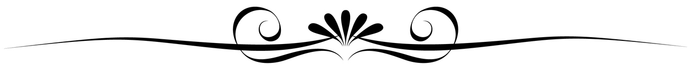

<div class="buttons">
<button class="top-button" (click) = "goBack()">Takaisin resepteihin</button>
<a class="edit-link" *ngIf = "loggedIn()" 
routerLink="/edit/{{ Recipe.Id }}" [queryParams]="{recipeToEdit:Recipe | json }">
<button class="top-button">Muokkaa reseptiä</button></a>
</div>
<div class="recipe">
    
    <div class="flex">
        <h3 class="heading"> {{ Recipe.Name }}</h3>
        <div class="tags">
            <div *ngFor = "let tag of Recipe.Tags">
                <span class="tag">{{tag}} </span>
            </div>
        </div>
    </div>
<p class="ingress"> {{ Recipe.Description }}</p>

<div class="flex bg-col">
    <div class="leftContent">
        <h4>Ainekset (4 annosta)</h4>
        <p [innerText]="Recipe.Ingredients"></p>
    </div>
   
    <div class=rightContent>
        <h4>Ohje</h4>
        <p [innerText]="Recipe.Instructions"></p>
    </div>
</div>
<p class="small"> Valmistusaika: {{ Recipe.PreparationTimeInMinutes }} min</p>
</div>


